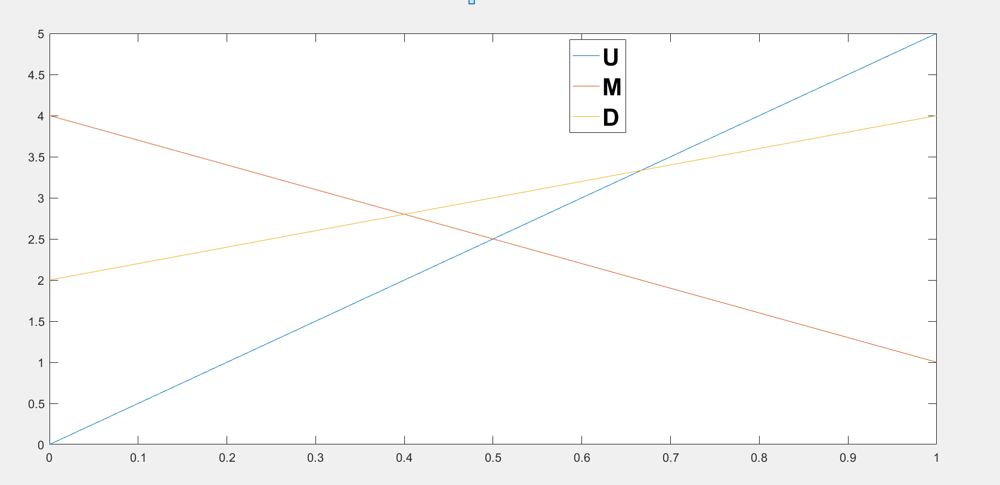

Lecture 3 迭代剔除劣势策略
上节课讲到的一种迭代的思想，从而证明自己是理性的。
政治领域下的案例（中间选民定理）
假设现在有两个选举人。他们现在从一系列的主张中进行策略的选择。
假设现在有十种立场，并且每种立场都会有10%的投票。
左派倾向于连树都有选择的权力，而右派则是精英主义，认为人就是应该有较大差距的。
收益是希望尽可能大的选票数量。
假设现在在立场1，对玩家2的选择进行枚举：
可以看到策略2严格优于策略1
同理，策略9严格优于策略10
那么现在策略3是否优于策略2： 发现策略3并不是严格优于策略2的。
但是我们将劣势策略删除（即删除策略1和策略10），选票的分布还是这样的，那么接着计算收益。
策略2和9不是劣势策略，但是一旦将最开始的劣势策略删除，那么2和9就会变成劣势策略。
通过这样进行迭代式的删除，我们最终只剩下5，6两种策略。
上面的模型存在很多的问题：
- 没有考虑到选票不是均匀分布的
- 选民每种立场也不是均匀分布的
- 选民不一定是根据主张进行选举的
选举的前后结果也会有变化
。。。
既然上面的模型有一定的问题，那么下面增加更多的因素进行分析，从而查看有什么更多的变化。
商店开在一起的以试图抢占顾客。
best response最佳对策
| L | R | |
|---|---|---|
| U | (5, 1) | (0, 2) |
| M | (1, 3) | (4, 1) |
| D | (4, 2) | (2, 3) |
发现不论是谁，都没有绝对的优势策略。
当对手选择L，那么U是最佳对策
如果是R，那么M是最佳对策。
假设对手选择L和R的概率是一致的，那么我们来计算一下预期的收益。
那么选择U的收益为。
选择M的收益为2.5
选择D的收益为3。
假设对手选择L的概率为p，选择R的概率为1-p.
那么选择L的收益预期为5p。
选择M的预期收益为4-3p
选择D的预期收益为2+2p。

通过对手的选择的概率进行选择。